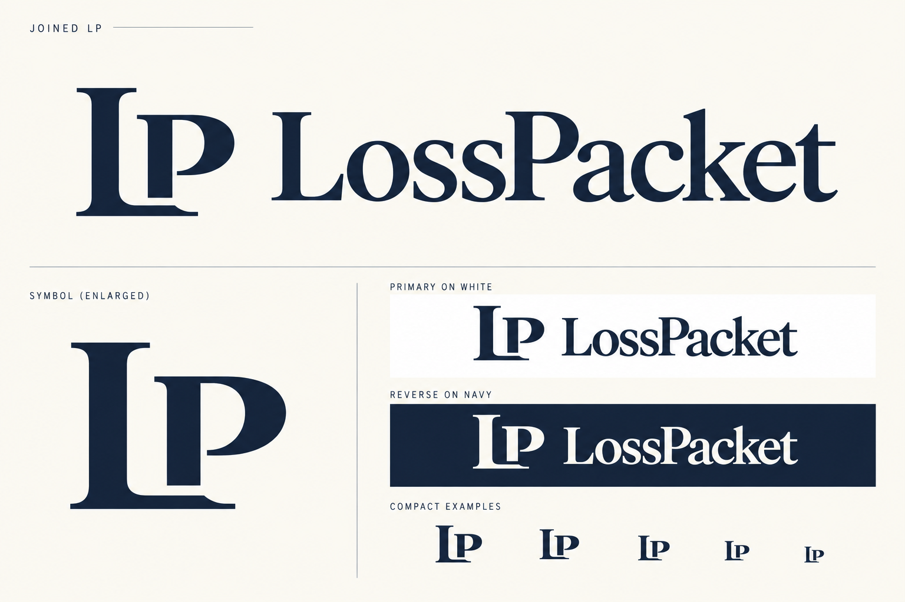
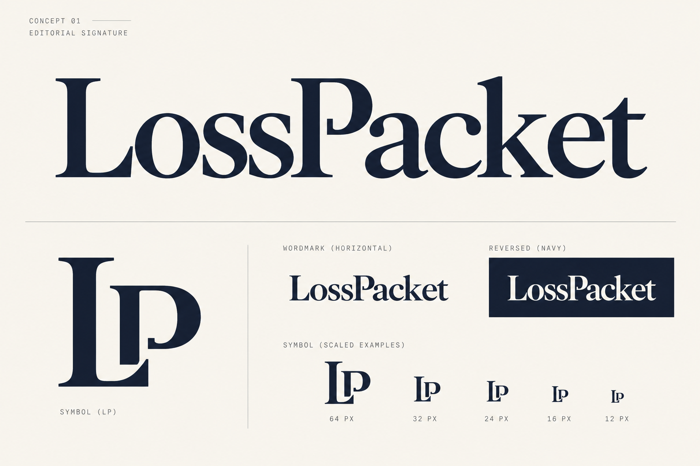
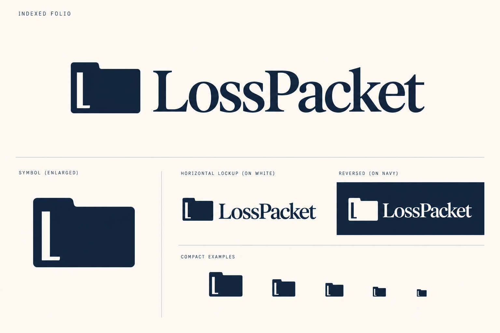
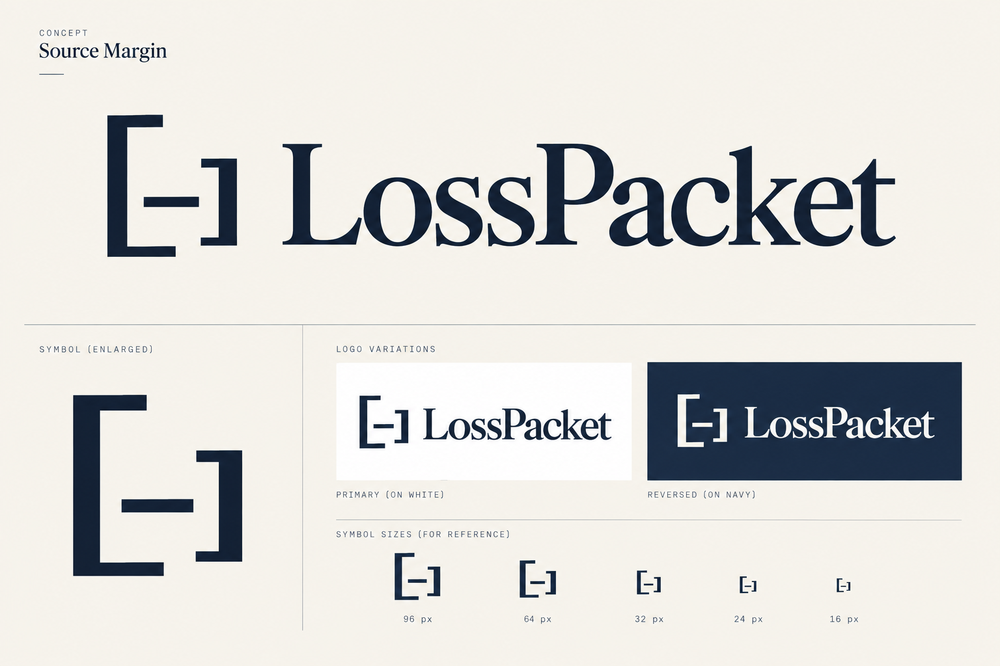

Logo research and original exploration · 14 October 2026
LossPacket logo directions
Develop Joined LP as the leading symbol and wordmark system. Keep Editorial Signature as the alternative if the website should lead primarily with its name. Indexed Folio is the clearest product metaphor; Source Margin is the most abstract.
These are generated PNG concept boards, not final vector masters. Their miniature applications show intended use; numerical size labels on an early board are not measured pixel-size tests. No trademark clearance has been performed.
What the logo should communicate
LossPacket organizes evidence for an owner and supervising professional. The logo should express a coherent packet, a recognizable name and deliberate source organization. It should sit comfortably beside policy excerpts, receipts, timelines and review notes without implying a covered claim, a payment, a legal ruling or a certified result.
The chosen Paper and Ink direction supplies the visual foundation: cream #F6F2EA, ink navy #1B2230, an editorial serif wordmark and slate #2F4B6E in the wider website. Amber remains a functional missing-evidence color rather than part of the core signature. Symbols are designed to work in one color, with a cream reverse on navy.
A packet, monogram or bracket does not universally mean trusted or verified evidence. The proposed meanings here are designer intent, to be checked with owners and professionals.
Research findings
| Source | Finding | Design consequence |
|---|---|---|
| Dropbox official logo guidance | The identity combines a glyph and wordmark and also uses a Tab that participates in page layout. | Document/container and tab territory already has prominent visual neighbors. Give the folio an original silhouette and avoid an open-box composition. |
| Docusign official brand elements | Its document shape uses a prescribed 45-degree dog-ear and a broader geometric brand system. | A folded paper corner is category shorthand, not automatically a distinctive LossPacket logo. Avoid echoing Docusign’s specific geometry and agreement symbolism. |
| Filevine identity account | Its account associates an upward motif with mountain and improvement themes. | Exclude growth chevrons and upward-success imagery; LossPacket’s preparation role does not promise a better settlement. |
| Pentagram MIT Technology Review identity and Consumer Reports identity | Both illustrate how a distinctive identity can relate to an editorial and digital system. | Make the mark, typography and layout rules coherent. Borrow the discipline of that relationship, not another identity’s shapes. |
| IBM icon usage guidance | Functional icons have specific sizes and require careful size-aware application. | Inspect actual 16px and 32px symbols rather than judging only an enlarged board. This is a useful practice reference, not an IBM logo rule for LossPacket. |
The adjacent workflow scan also covered Snapsheet and Encircle. Their claims and restoration-documentation contexts reinforce the need to explain LossPacket’s insured-side role. Vendor capabilities are not evidence of LossPacket functionality or demand.
Research used Perplexity deep research and direct primary-page checks. The selected website preview provided palette and typographic context. Competitor logo artwork was not used as a generation reference.
Joined LP
Recommended overall

Intended meaning. The full name has a compact typographic companion. The visible L foot and open P counter connect the mark directly to LossPacket. Its serif construction fits the Paper and Ink site without relying on a generic document pictogram.
Refinement point. Refine optical spacing and reduce the finest serif details for small applications. Test that viewers read LP, rather than IP or a single P. It could feel like professional-services branding; keep the website’s evidence visuals to explain the category.

Editorial Signature
Strongest wordmark-led alternative

Intended meaning. The name itself becomes the principal identity. The modified P and careful spacing provide a restrained editorial signature, suitable for the large serif typography and physical packet artwork.
Refinement point. The accompanying LP-derived initial overlaps with the monogram territory. Its value comes mainly from the wordmark. Confirm that the custom P’s small internal detail remains clean and does not look damaged or ornamental.

Indexed Folio
Most direct product connection

Intended meaning. A folder-like packet with an asymmetric index tab and an L-shaped internal reference margin signals assembled materials. The refined broad silhouette removes the bottle-like appearance of the first draft.
Refinement point. Still close to a common folder category symbol. The tab and internal L need to become distinctive through exact proportions, consistent use and recognition testing; category relevance alone does not guarantee uniqueness.

Source Margin
Most abstract and systematic

Intended meaning. Asymmetric brackets and a source rule connect to annotated documents, source excerpts and the site’s margin-note visual language. It can extend into packet-cover and section-divider graphics.
Refinement point. May be read as a crop/scanner/code control. It needs the full LossPacket wordmark and product context. The unusual geometry is promising, but it is less immediately connected to the company name than LP.

Selection and refinement criteria
- Read LossPacket immediately at realistic header size; check the ssP junction and thin-stroke weight.
- Inspect the standalone mark on cream, white, navy and grayscale. Keep counters and gaps open.
- Create actual 16×16 and 32×32 raster proofs from a clean vector master. Simplify the small mark optically if needed.
- Place the candidate in the selected navbar, packet cover, source report and favicon context. Match symbol weight to the wordmark.
- Ask owners and professional reviewers what they think the business does without suggesting an answer. Record misreadings and mistaken impressions of approval, insurance coverage or legal authority.
- Compare the chosen design with relevant marketplace marks before finalizing. The USPTO’s comprehensive-clearance guidance explains why similar marks and related services matter; this category review is not a clearance result.
Final asset package after selection: editable vector master; outlined SVG horizontal and stacked lockups; primary, reverse and monochrome symbols; transparent PNG exports; a small-size symbol variant if needed; SVG/ICO/PNG favicons and touch icon; and clear-space/minimum-size guidance. The current assignment supplies research and logo alternatives, ready for a choice and focused refinement.